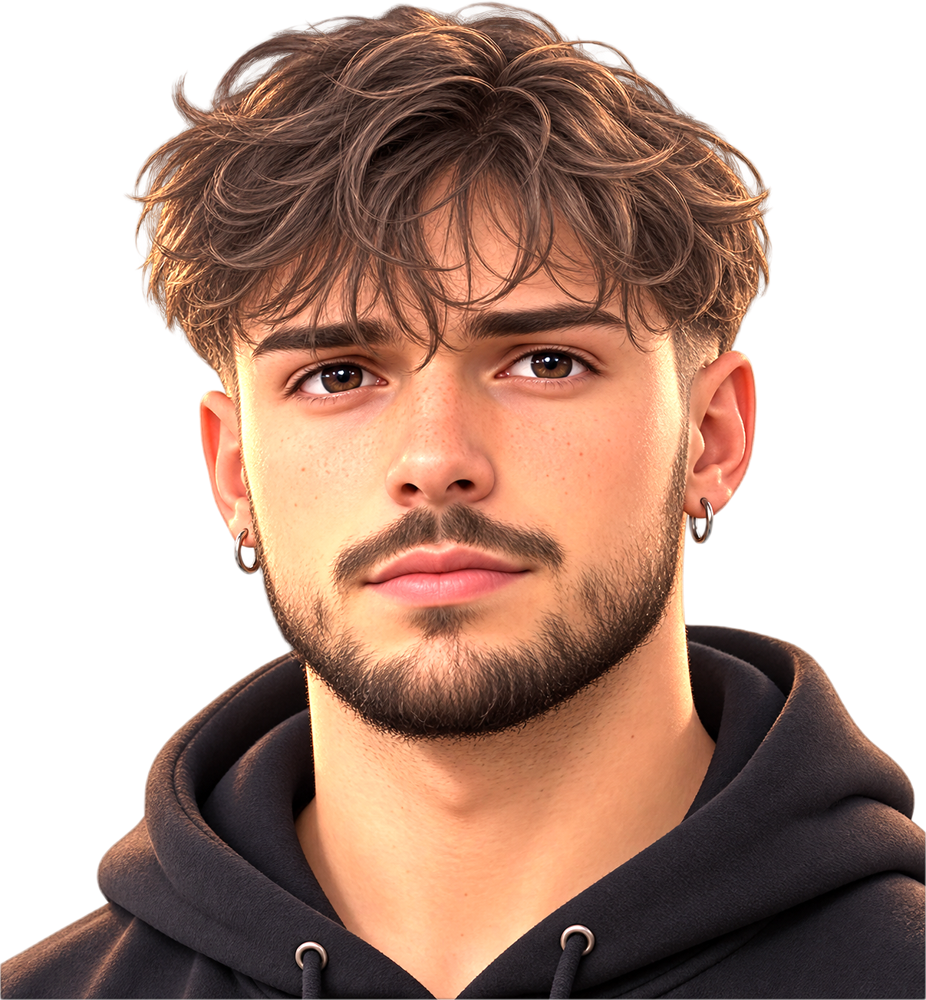
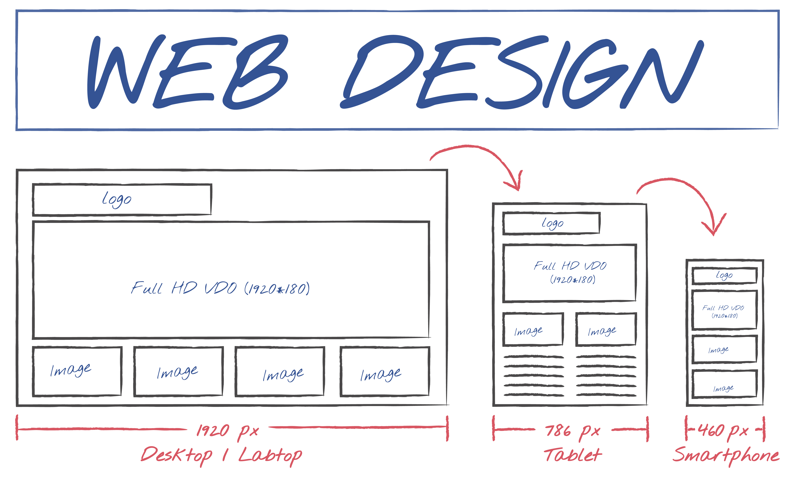

UI PACT
Designer & développeur web chez UI PACT
Je construis des trucs que les gens utilisent vraiment. Je dirige UI PACT, un studio de design d'interfaces et de développement web : maquettes, sites vitrines et applis, du croquis à la mise en ligne.
Installé à Toulouse. Autodidacte : j'ai appris en construisant. Je dessine et je code des interfaces, du premier croquis à la mise en ligne.
Toulouse--:--dis bonjour ↓
Tu construis quelque chose ? Parlons-en.
ce que j'ai construit.
- Site vitrine (exemple)maquette et intégration d'un site pour une petite entreprisemaquette, intégration, mise en ligne2026
- Appli de réservation (exemple)prise de rendez-vous en ligne simple et claireparcours utilisateur et interface complets2026
- Kit d'interface (exemple)composants et charte réutilisablesAppli complète en solo2025
mon parcours.
- 2026 - Aujourd’huiUI PACT (actuel)
Designer & développeur web
Je conçois des maquettes et je les transforme en sites vitrines et en applis web et mobile : design, intégration, mise en ligne et suivi pour mes clients.
- 2025 - 2026Missions freelance
Designer UI & développeur front
Figma / React / Next.js
- 2025Projet personnel↳ Appli complète en solo!!
Concepteur d'applis
Next.js / Supabase / Stripe / Vercel
- 2024Formation en ligne
Développeur web en formation
React / Next.js / Vercel
- 2023Premiers projets UI
Designer d'interfaces utilisateur junior
- 2025 - 2026Défis & concours↳ mon prochain défi : un concours de design
plusieurs participations
Anecdote : mon premier client est arrivé grâce à Instagram.
petits mots gentils.
“Ce que UI PACT a conçu en quelques semaines est remarquable.”
Camille DurandGérante d'une boutique en ligne
Cliente · exemple de témoignage
“Ce qui m'a le plus marqué, c'est sa capacité à transformer une idée floue en maquette précise, et il nous a guidés à chaque étape.”
Lucas MartinResponsable marketing
Client · exemple de témoignage
“Il apprend vite, communique très bien et met toujours une bonne ambiance.”
Inès MoreauDirectrice artistique
Collaboration · exemple de témoignage
album souvenirs.
à l'atelier

maquettes à 2h du matin
première mise en ligne
dis bonjour.
Le mieux, c'est l'e-mail : uipact@gmail.com . Je suis aussi sur Instagram.